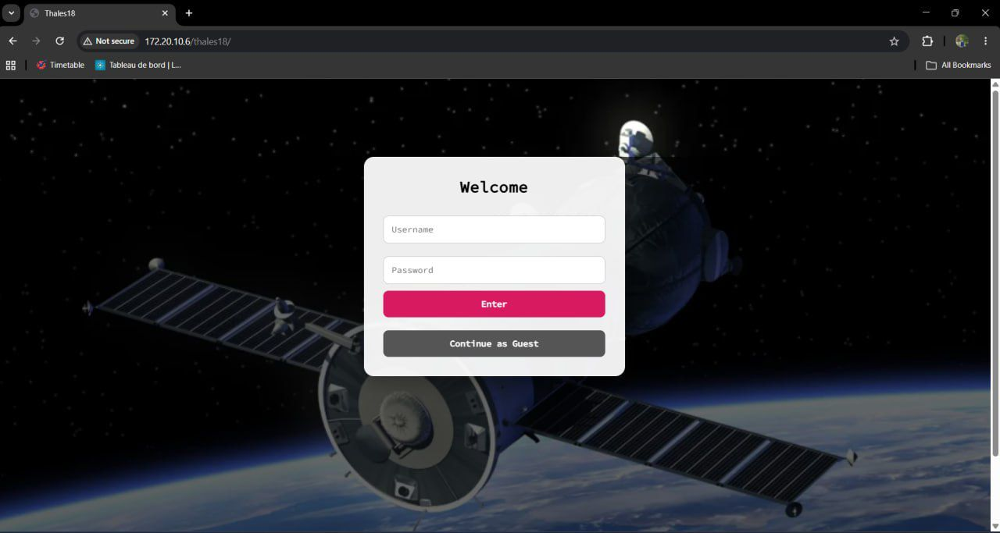

Projet 1 : Système de suivi visuel d’un banc avionique

Contexte du projet
Un banc avionique est composé de plusieurs équipements reliés par de nombreux câbles. Pendant les essais, certaines modifications physiques peuvent être faites temporairement, comme l’ajout d’équipements de mesure ou la correction de câbles.
Ces changements ne sont pas toujours conservés visuellement, alors qu’ils peuvent influencer les résultats obtenus. Le problème principal était donc le manque de traçabilité visuelle de l’état du banc pendant les tests.
Objectif
L’objectif du projet était de développer un système permettant de prendre des photos d’un banc avionique, automatiquement ou sur demande, puis de les archiver afin de conserver un historique visuel consultable depuis un site web local.
Travail réalisé
Dans ce projet, nous avons conçu et développé une application complète composée d’un site web, d’une base de données et de programmes Python. Le système permet la prise de photos, la consultation de l’historique, la gestion des utilisateurs, la conservation des logs et la suppression contrôlée des photos.
Nous avons également travaillé sur l’authentification, la gestion des rôles utilisateurs, le blocage du compte après plusieurs essais incorrects et l’organisation des pages du site.
Technologies et outils utilisés
Raspberry Pi 3, caméra, détecteur de luminosité, LED, Linux, Python, PHP, CSS, base de données et GitHub.
Ce que j’ai appris
Ce projet m’a permis de comprendre toutes les étapes d’un projet technique : analyse du besoin, rédaction des exigences, conception, développement, tests et correction d’anomalies.
J’ai aussi appris à relier plusieurs éléments entre eux, comme un site web, une base de données, un Raspberry Pi et un programme Python.
Difficultés rencontrées
La principale difficulté était de faire fonctionner plusieurs parties ensemble : le site web, la base de données, la prise de photo et la gestion des utilisateurs. Il fallait aussi penser à la sécurité, à la traçabilité et aux droits de chaque type d’utilisateur.
Preuves du projet
Comme preuves, je présente une capture de l’interface web, une photo du montage avec le Raspberry Pi et un exemple de suivi réalisé pendant le projet.
